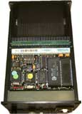
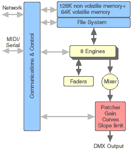

LanBox-LC manual v2.0b1
What's under the hood
| |
LanBox-LC manual v2.0b1 What's under the hood |
|
|
| Index
Introduction Getting started What's under the hood Using MIDI or Serial |
The electronics in the LanBox-LC
The LanBox-LC houses an industrial based embedded microprocessor system, with the following features:
The electronics of the LanBox-LC is built with standard industrial printed circuit boards. The lower board contains all connectors to the outside world, the switching power supply , the network isolation transformer and buffer drivers for network and DMX. The top board contain a complete microcomputer system, including RAM, ROM, FlashPROM, nonvolatile RAM module and communication chips. As you can see, there is quite some space left at the back part of the box. This space is reserved for extra optional i/o boards like analog outputs, relay outputs etc. We do not (yet) offer this options, but if there is enough demand, we might ;-) On the top printed circuit board you see (besides all kind of electronic components) a small push button. If you ever loose your password this button can save you. When pressing it for more then five seconds, when the box is powered, it clears ALL memory including the password. Note: When you have cleared the LanBox-LC with this button, the password is 0 (zero), the name of the box is "IMC720" and ALL lighting settings and programs (including the firmware) are gone. |
| The operation of the LC+ firmware
When we ship a LanBox-LC we'll always load the latest LCII software into the box. When you want to use the new LC+ firmware, it needs to be installed with LCedit+. New versions of the LanBox-LC+ firmware will appear on our web site and can be downloaded for free. Although the LC+ firmware is much more complex then the LCII, the LC+ data flow diagram appears very simple. LanBox-LC+ data flow An engine gets data delivered to it's light channel(s) as a result of a request from the sequencer to the file system or it's delivered by network or MIDI/serial commands. As a result of this, the status of a channel which has data will be "enabled" and (when "Auto Output" is on), the channel output is also switched on. As the result of new data, faders are started for each enabled channel . The "Enabled" status of a channel marks that it is used and should be stored when inserting/appending/replacing a scene. The enabled status is cleared for all channels when the sequencer requests a new scene or by hand with the "clear engine" command. When the output status of a channel is on, the data from the faders are fed into the mixer. The mixer works like layers in Photoshop and can be set for each layer (engine) to Copy, HTP, LTP and transparent mode. Engine A is the top layer (has the highest priority), while engine H is the lowest layer. Note: Each engine has a master output switch, in order to override the channel output switches. If you turn off the auto output and the master output you can view/edit scenes while the data is not going to the mixer (blind editing). Post processing The sequencers Each scene load activates faders with the fade time of the step instruction and is independent of the hold time of the step. This makes it possible to start at a certain time with completely different fade times for different channels or have different fade-in and -out times for a cross fade. Once a sequencer is enabled (Run) and it has been "Go"ed, it keeps sequencing until the end of a cue list. When the Chaser is set it can keep on going depending of the chaser mode. |
|
|
Introduction | Getting started | Under the hood | MIDI&Serial | FAQ&Specs
|
|
|
|
| Last updated: 31-07-2000 by: Fokko |
Copyright 1997..2000 CDS advanced technology bv. LanBox is a registered trademark of CDS advanced technology bv. All other names referenced are the service marks, trademarks or registered trademarks of their respective companies. Comments or suggestions: webmaster@cds.nl , Questions and info: info@cds.nl. |
|
|
|